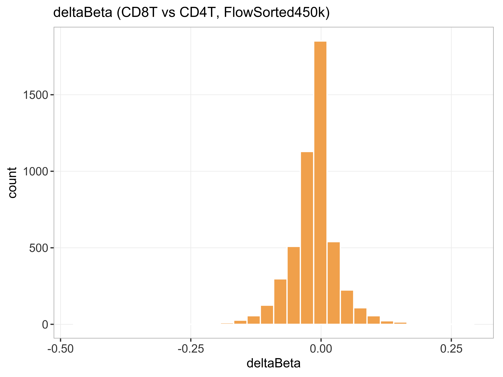

状态：PARTIAL
已 source 本技能 脚本_scripts/: 运行骨架_runSkeleton.R
data_provenance: REAL — FlowSorted.Blood.450k 公开 beta 子集（CD8T vs CD4T）。
STATUS: PARTIAL — 未跑 WGBS/RRBS 比对；见技能说明 SOP。
"skill","stage","n_rows","n_cols","n_samples","group_source","toy","data_provenance","accession","sourced_skill_scripts","notes","checked_at" "WGBS-RRBS","post",5000,8,8,"FlowSorted.Blood.450k CellType CD8T vs CD4T",FALSE,"REAL","FlowSorted.Blood.450k (Bioconductor ExperimentData, 450k)","已 source 本技能 脚本_scripts/: 运行骨架_runSkeleton.R","REAL beta subset; upstream Bismark/MethylKit BLOCKED_EXTERNAL","2026-07-18 21:26:57"

REAL FlowSorted.Blood.450k beta subset; PARTIAL (no WGBS FASTQ). accession=FlowSorted.Blood.450k (Bioconductor ExperimentData, 450k).
生成时间：2026-07-18 21:26:58 · 报告规范：统一交付规范_DeliveryStandards · 版本 v1